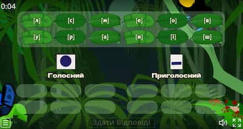
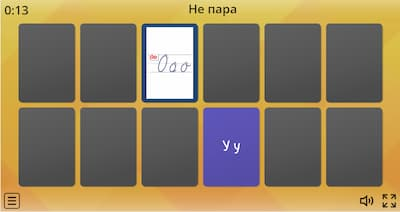

Сучасні діти
"Сучасні діти… Всі навперебій, Доказують, що інші діти, інші… На хвильку зупинися і постій — Які вони? Добріші? Розумніші? Так, до нового більший доступ є, В них забавки дорожчі й цікавіші. Звичайно, мають інше щось, своє, Завдання ж перед ними все складніші… Але це тільки діти, дітлахи, Що хочуть ласки, радості й любові, Злітаються на добрість, як птахи. І хочуть теплоту почути в слові… Щоб пригорнули їх і обняли, І до грудей притисли міцно-міцно. І щось хороше дуже в них знайшли, І похвалили, й полюбили, звісно. Вони лиш діти, як в усі віки, Прийшли у світ цей, щоб його пізнати. І пізнають нове все залюбки, Навчаються читати і писати… Вони лиш діти, в них шляхи прості, Вони у світі вчаться просто жити. Нам їх ростити треба в доброті, І поважати щиро та любити. Бо це лиш діти, як весняний цвіт, Ми їх навчити мусимо літати. Щоб йшли вони щасливими у світ Й могли свою дорогу прокладати." Сучасні діти… © Надія Красоткіна.
-

Вправляємося у виділенні першого звука. Чітко спробуй вимовити слово. Подумай! Поділи слова на групи за першим звуком.
-

Вчи грамоту! Спробуй читати ціле слово! Малюнок буде тобі підказкою!
-

Розумнички, поділи звуки на групи! Не забувай, що голосні звуки можна співати...
-

Поєднай друковану і рукописну літеру! Вчи грамоту!